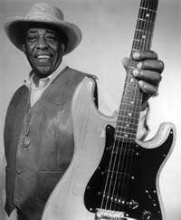

Long John Hunter

Но история восхождения артиста началась гораздо раньше. Long John играл roadhouse blues в течение сорока лет, и тридцать из них прошли в штате Техас, где он считался правящим королем блюза.
John T. Hunter, Jr. родился в 1931 году в Луизиане, рос в Техасе и Арканзасе, и даже не помышлял о музыкальной карьере до тех пор, пока ему не исполнилось 22 года. Но однажды он попал в клуб, где в этот вечер выступал B.B. King. Коллегам по работе пришлось тащить его в клуб силком, потому, что узнав, что входной билет стоит полтора доллара, Джон наотрез отказался идти туда. Однако впечатление, которое произвел концерт, определило всю его дальнейшую судьбу. John был потрясен тем умением зажигать публику, которым владел B.B. King, и (особенно) его влиянием на молодых женщин в зале.
На следующий день Hunter пошел в магазин и приобрел первую в жизни гитару. Несмотря на то, что он никогда не играл на этом инструменте раньше, желание «быть как B.B. King» подстегивало его. На той же неделе он собрал группу, а уже год спустя выступал на сцене того самого клуба, поход в который перевернул его жизнь. Первая запись, выпущенная в 1954 году на лэйбле Duke Records, не принесла Long John Hunter вселенского успеха, но подогрела интерес к исполнителю в околоблюзовых кругах Хьюстона. Два года спустя он уезжает западнее Эль Пасо, после чего пересекает границу с Мексикой, и следующие тринадцать лет проводит там. Семь дней в неделю от заката до рассвета Long John и его бэнд играли перед разномастной, красочной и местами опасной публикой, состоявшей из солдат, туристов, проституток, ковбоев и плэйбоев. Музыканты играли в атмосфере, начиненной алкоголем и духом соперничества. «Если бы это не происходило в этом месте, называемом Lobby Bar, то не произошло бы никогда в моей жизни», - вспоминает Джон. Местечковую славу артист ощутил сполна, и вскоре Long John Hunter был провозглашен «настоящим королем западнотехасского блюза». Он знал, как завести эту публику. Никаких заунывных баллад, под которые хочется ронять слезы в кружку с пивом – только зажигательный блюз, исполняемый темпераментно и несущий печать личности исполнителя. Слухи о «чумовом» гитаристе начали распространяться по Техасу, и вскоре имя Long John Hunter заняло почетное место в ряду блюзовых знаменитостей. Никому тогда не известный Бадди Холли специально пересек границу с Мексикой, чтобы послушать его. Дважды его группа была приглашена принять участие в шоу великого Джеймса Брауна, и во второй раз сам Браун появился на сцене в середине сета. Возмущенная публика начала требовать, чтобы Браун и его музыканты ушли со сцены, освободив ее для их кумира – короля техасского блюза Long John Hunter.
После того, как Lobby Bar, в котором прошли эти тринадцать лет, был закрыт, Long John провел несколько лет в Эль Пасо, после чего начал работать на блюзовой сцене западного Техаса.
1998 год ознаменовался выходом альбома "Ride With Me", который принес Хантеру успех у широкой публики и восторженные отзывы самых авторитетных музыкальных изданий. Rolling Stone: «Long John Hunter обладает властью над аудиторией, совершенно неожиданной для человека, которому пошел седьмой десяток». Рецензии на альбом появлялись в "Billboard", "Washington Post", "Guitar Player", "Musician", "Living Blues" и пр.
Все это говорит о том, что, после сорока лет работы на второсортных площадках, Long John Hunter наконец победил – он завоевал признание и понимание у широкой публики.